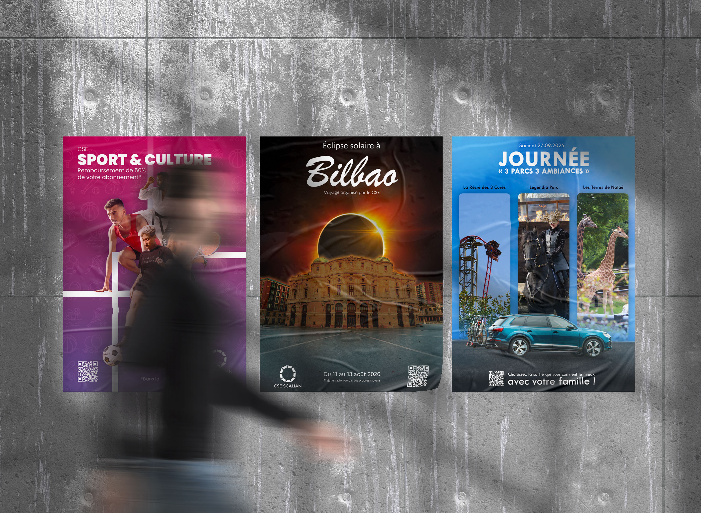
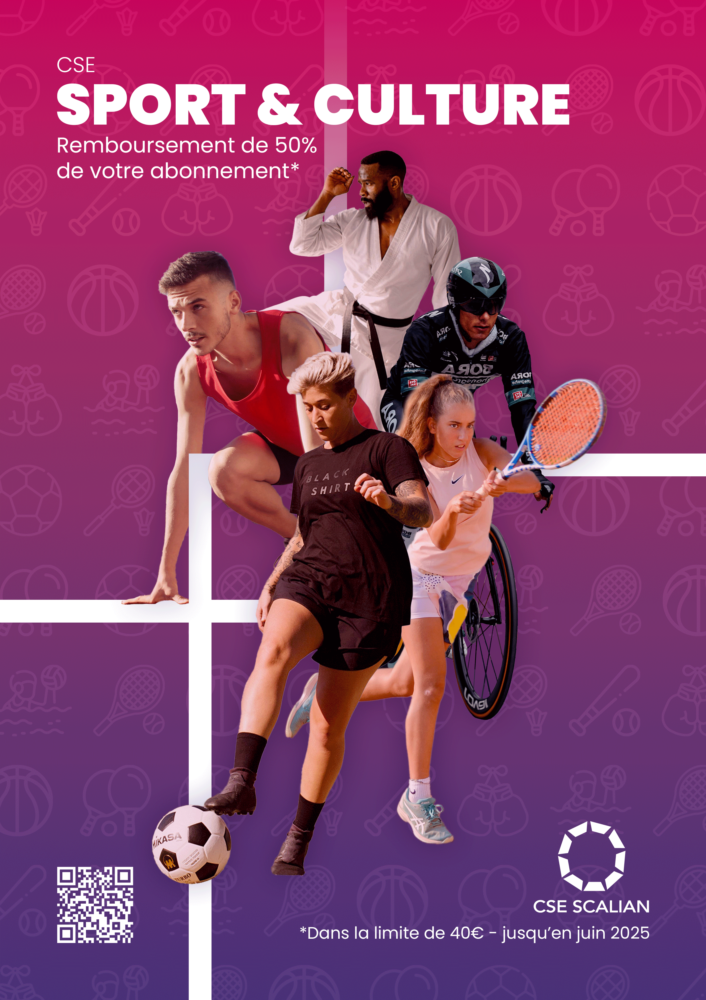
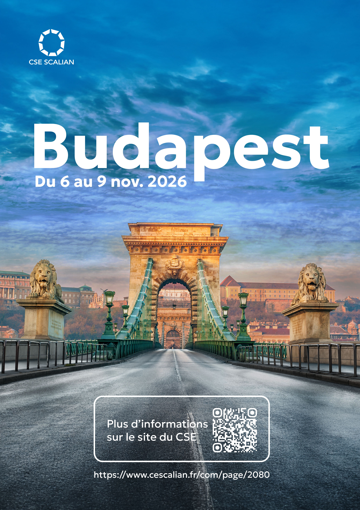
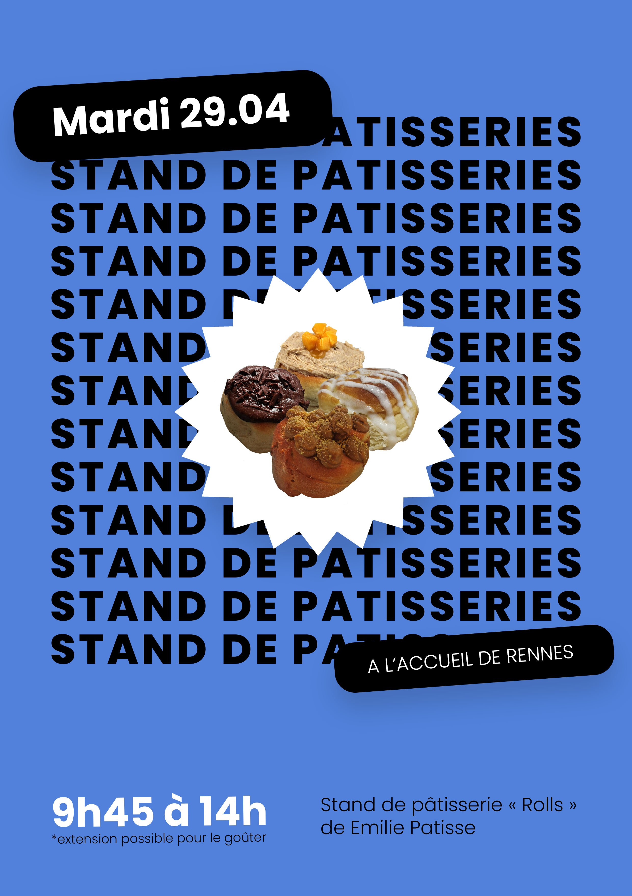

CSE Scalian
Durant mes deux années d’alternance chez Scalian,
le CSE a régulièrement fait appel à mes compétences pour concevoir des affiches destinées à promouvoir
les événements internes de l’entreprise.
Disposant généralement d’une grande liberté créative,
j’ai pu explorer différents univers graphiques et adapter chaque création à l’événement concerné.
Vous trouverez sur cette page une sélection de ces réalisations.





